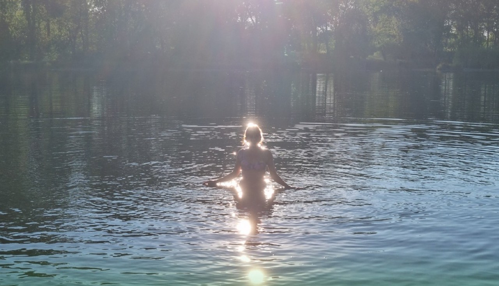

«Он меня не слышит»
Разговор превращается в спор за две минуты. Любая просьба — конфликт, а на вопрос «как дела» ответ «нормально».
Абакан и онлайн · 13 лет практики
Я Галина, семейный психолог и детский нейропсихолог. За одну встречу помогу понять, что стоит за поведением вашего ребёнка и что с этим делать — без нотаций и без «потерпите, перерастёт».


За «невыносимым» поведением почти всегда стоит причина,
которую можно найти — и с которой можно работать
Знакомо?
Разговор превращается в спор за две минуты. Любая просьба — конфликт, а на вопрос «как дела» ответ «нормально».
Телефон, наушники, дверь. Вы не понимаете, что происходит внутри, и боитесь спросить, чтобы не стало хуже.
Был спокойный ребёнок — стал раздражительным, скрытным, потерял интерес к тому, что раньше любил.
Съехала успеваемость, жалобы учителей, отказ идти на уроки. А дома — «всё нормально, отстань».
Вы устали быть в напряжении, срываетесь, а потом виноватите себя за это. Хочется просто выдохнуть.
Советы из интернета противоречат друг другу: то строже, то мягче. А ребёнок — конкретный, и он ваш.
Почему ко мне идут
Обычно родителям приходится ходить к двоим — и платить дважды. У меня оба направления сразу, поэтому картина видна целиком.
Разбираем отношения: что стоит за поведением, как разговаривать без конфликтов, где границы, а где давление. Работаю и с родителем, и с подростком.
Смотрю на то, что не видно глазом: внимание, память, саморегуляция, утомляемость. Иногда «ленится» и «не старается» — это не характер, а особенности созревания мозга.
Услуги
Знакомимся, вы рассказываете ситуацию, я задаю вопросы. На выходе вы получаете карту решения: что происходит, почему и с чего начинать.
Разбираем вашу ситуацию с ребёнком: причины поведения и конкретные приёмы общения, которые работают именно в вашем случае.
Разговор с самим подростком — на его языке и без «мама сказала, что ты плохо себя ведёшь». Безопасное пространство, где можно говорить честно.
Проверяем внимание, память, саморегуляцию и утомляемость. Часто именно здесь находится ответ на «почему не может собраться».
Практические встречи для родителей: техники общения без конфликтов, разбор типичных ситуаций, ответы на вопросы.
Формат тот же, что и очно. Многие родители из других городов работают со мной именно так — удобно и без дороги.
Что вы получите
Поймёте причины поведения ребёнка — а не будете гадать и пробовать наугад
Освоите простые техники общения без конфликтов, которые можно применять с завтрашнего дня
Снимете чувство тревоги и постоянного напряжения
Получите двойную помощь — психологическую и нейропсихологическую, а значит экономию времени и денег
Пройдёте подростковый период спокойно, а не «как-нибудь переживём»
Сохраните отношения с ребёнком — то, ради чего всё и затевается

Обо мне
Я сердечно приветствую вас. Работаю с родителями подростков и с самими подростками — и знаю, что за «невыносимым» поведением почти всегда стоит причина, которую можно найти и с которой можно работать.
Со мной ваша жизнь станет спокойнее и уютнее — как с ароматным чаем у тёплого камина.
Записаться на встречуКак это устроено
Коротко описываете ситуацию: возраст ребёнка и что беспокоит. Подбираем время.
Бесплатно. Я задаю вопросы, вы рассказываете. На выходе — карта решения вашей ситуации.
Консультации с вами, с подростком или диагностика — то, что нужно именно в вашем случае.
Вы получаете конкретные приёмы и применяете их. Что не получилось — разбираем на следующей встрече.
Частые вопросы
Приходите сначала сами — это нормальная и очень частая ситуация. Многое решается через родителя: меняется ваша реакция, меняется и поведение подростка. А дальше он часто соглашается сам, увидев, что дома стало спокойнее.
За одну встречу вы точно поймёте причины поведения и получите план действий. Сколько потребуется дальше — зависит от ситуации, и решаете это вы, а не я. Я не «подсаживаю» на длинную терапию.
Психолог работает с отношениями и эмоциями, нейропсихолог — с тем, как работает мозг: внимание, память, саморегуляция. Бывает, что подросток «не старается» не из вредности, а потому что физически не может удерживать внимание. Это решается не разговорами, а другими методами.
Да. Формат и длительность те же. Многие родители из других городов работают со мной онлайн, и результат не отличается.
Нет. Вы уже делаете больше, чем большинство, — вы ищете помощь. Моя задача не оценивать, а разобраться и дать инструменты.
100% предоплата за консультацию. Диагностическая встреча бесплатная, так что начать можно ничем не рискуя.
Запись
Напишите возраст ребёнка и что беспокоит — я отвечу лично и предложу удобное время. Всё, что вы расскажете, останется между нами.